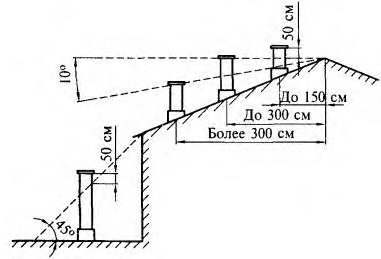

СП 402.1325800.2018 «Здания жилые. Правила проектирования систем газопотребления»
О документе: разработчики, утверждение, регистрация, ключевые слова
СВОД ПРАВИЛ
СП 402.1325800.2018
Издание официальное
Москва 2018
1 ИСПОЛНИТЕЛЬ - Закрытое акционерное общество «Проектноизыскательский и научно-исследовательский институт промышленного транспорта» (ЗАО «ПРОМТРАНСНИИПРОЕКТ»)
2 ВНЕСЕН Техническим комитетом по стандартизации ТК 465 «Строительство»
3 ПОДГОТОВЛЕН к утверждению Департаментом градостроительной деятельности и архитектуры Министерства строительства и жилищнокоммунального хозяйства Российской Федерации (Минстрой России)
4 УТВЕРЖДЕН приказом Министерства строительства и жилищнокоммунального хозяйства Российской Федерации от 5 декабря 2018 г. № 789/пр и введен в действие с 6 июня 2019 г.
5 ЗАРЕГИСТРИРОВАН Федеральным агентством по техническому регулированию и метрологии (Росстандарт)
В случае пересмотра (замены) или отмены настоящего свода правил соответствующее уведомление будет опубликовано в установленном порядке. Соответствующая информация, уведомление и тексты размещаются также в информационной системе общего пользования - на официальном сайте разработчика (Минстрой России) в сети Интернет
© Минстрой России, 2018
Настоящий нормативный документ не может быть полностью или частично воспроизведен, тиражирован и распространен в качестве официального издания на территории Российской Федерации без разрешения Минстроя России
Дата введения - 2019-06-06
УДК ОКС 75.180.20
Ключевые слова: внутренние газопроводы, природный газ, сеть газопотребления, газоиспользующее оборудование, системы газоснабжения
\_\_\_\_\_\_\_\_\_\_\_\_\_\_\_\_\_\_\_\_\_\_\_\_\_\_\_\_\_\_\_\_\_\_\_\_\_\_\_\_\_\_\_\_\_\_\_\_\_\_\_\_\_\_\_\_\_\_\_\_\_\_\_\_\_\_
Руководитель организации-разработчика
Руководитель разработки
Исполнитель
Инженер \_\_\_\_\_\_\_\_\_\_\_\_\_\_\_\_\_\_\_\_\_\_Г.В.Ковылина
Исполнитель
Инженер \_\_\_\_\_\_\_\_\_\_\_\_\_\_\_\_\_\_\_\_\_В.И. Воробьев
Введение
6 ВВЕДЕН ВПЕРВЫЕ
Настоящий свод правил разработан с учетом требований федеральных законов от 29 декабря 2004 г. № 190-ФЗ «Градостроительный кодекс Российской Федерации», от 30 декабря 2009 г. № 384-ФЗ «Технический регламент о безопасности зданий и сооружений», от 17 марта 1999 г. № 69-ФЗ «О газоснабжении в Российской Федерации», от 22 июля 2008 г. № 123-ФЗ «Технический регламент о требованиях пожарной безопасности», от 23 ноября 2009 г. № 261-ФЗ «Об энергосбережении и о повышении энергетической эффективности и о внесении изменений в отдельные законодательные акты Российской Федерации».
Настоящий свод правил разработан авторским коллективом ЗАО «ПРОМТРАНСНИИПРОЕКТ» ( Г.В. Ковылина , В.И. Воробьев ).
1Область применения
- наружных сетей газопотребления, которые проектируются в соответствии с СП 62.13330;
- технологических газопроводов;
- газопроводов сжиженных углеводородных газов.
2Нормативные ссылки
В настоящем своде правил использованы нормативные ссылки на следующие документы:
ГОСТ 21.609-2014 Система проектной документации для строительства. Правила выполнения рабочей документации внутренних систем газоснабжения
ГОСТ 617-2006 Трубы медные и латунные круглого сечения общего назначения. Технические условия
ГОСТ 3262-75 Трубы стальные водогазопроводные. Технические условия
ГОСТ 5542-2014 Газы горючие природные промышленного и коммунально-бытового назначения. Технические условия
ГОСТ 8732-78 Трубы стальные бесшовные горячедеформированные. Сортамент
ГОСТ 8733-74 Трубы стальные бесшовные холоднодеформированные и теплодеформированные. Технические требования
ГОСТ 8734-75 Трубы стальные бесшовные холоднодеформированные. Сортамент
ГОСТ 9544-2015 Арматура трубопроводная. Нормы герметичности затворов
Правила проектирования систем газопотребления
Residential buildings. Design rules for gas consumption systems
ГОСТ 10704-91 Трубы стальные электросварные прямошовные. Сортамент
ГОСТ 10705-80 Трубы стальные электросварные. Технические условия
ГОСТ 17356-89 (ИСО 3544-78, ИСО 5063-78) Горелки на газообразном и жидком топливах. Термины и определения
ГОСТ 30698-2014 Стекло закаленное. Технические условия
ГОСТ 32388-2013 Трубопроводы технологические. Нормы и методы расчета на прочность, вибрацию и сейсмические воздействия
ГОСТ 32585-2013 Фитинги-переходники из меди и медных сплавов для соединения трубопроводов. Технические условия
ГОСТ 32590-2013 Фитинги из меди и медных сплавов для соединения медных труб способом капиллярной пайки. Технические условия
ГОСТ 32591-2013 Фитинги из меди и медных сплавов для соединения медных труб способом прессования. Технические условия
ГОСТ 32598-2013 Трубы медные круглого сечения для воды и газа. Технические условия
ГОСТ 33998-2016 (EN 30-1-1:2008+A3:2013, EN 30-2-1:2015) Приборы газовые бытовые для приготовления пищи. Общие технические требования, методы испытаний и рациональное использование энергии
ГОСТ Р 12.3.047-2012 Система стандартов безопасности труда. Пожарная безопасность технологических процессов. Общие требования. Методы контроля
ГОСТ Р 21.1101-2013 Система проектной документации для строительства. Основные требования к проектной и рабочей документации
ГОСТ Р 51377-99 Конвекторы отопительные газовые бытовые. Требования безопасности и методы испытаний
ГОСТ Р 51733-2001 Котлы газовые центрального отопления, оснащенные атмосферными горелками, номинальной тепловой мощностью до 70 кВт. Требования безопасности и методы испытаний
ГОСТ Р 52318-2005 Трубы медные круглого сечения для воды и газа. Технические условия
ГОСТ Р 52922-2008 Фитинги из меди и медных сплавов для соединения медных труб способом капиллярной пайки. Технические условия
ГОСТ Р 52948-2008 Фитинги из меди и медных сплавов для соединения медных труб способом прессования. Технические условия
ГОСТ Р 52949-2008 Фитинги-переходники из меди и медных сплавов для соединения трубопроводов. Технические условия
ГОСТ Р 53865-2010 Системы газораспределительные. Термины и определения
ГОСТ Р 54438-2011 (ЕН 625:1996) Котлы газовые для центрального отопления. Дополнительные требования к бытовым водонагревателям совместно с котлами номинальной тепловой мощностью до 70 кВт
ГОСТ Р 54439-2011 (ЕН 13836:2006) Котлы газовые для центрального отопления. Котлы типа В с номинальной тепловой мощностью свыше 300 кВт, но не более 1000 кВт
ГОСТ Р 54821-2011 (ЕН 89:1999) Водонагреватели газовые емкостные для приготовления бытовой горячей воды
ГОСТ Р 54824-2011 (EH 88-1:2007) Регуляторы давления и соединенные с ними предохранительные устройства для газовых аппаратов. Часть 1. Регуляторы с давлением на входе до 50 кПа включительно
ГОСТ Р 54826-2011 (ЕН 483:1999) Котлы газовые центрального отопления. Котлы типа «С» с номинальной тепловой мощностью не более 70 кВт
ГОСТ Р 54961-2012 Системы газораспределительные. Сети газопотребления. Общие требования к эксплуатации. Эксплуатационная документация
ГОСТ Р 56288-2014 Конструкции оконные со стеклопакетами легкосбрасываемые для зданий. Технические условия
ГОСТ Р ЕН 50194-1-12 Сигнализаторы горючих газов для жилых помещений. Часть 1. Общие технические требования и методы испытаний
СП 1.13130.2009 Системы противопожарной защиты. Эвакуационные пути и выходы (с изменением № 1)
СП 4.13130.2013 Системы противопожарной защиты. Ограничение распространения пожара на объектах защиты. Требования к объемнопланировочным и конструктивным решениям
СП 7.13130.2013 Отопление, вентиляция и кондиционирование. Требования пожарной безопасности
СП 15.13330.2012 «СНиП II-22-81* Каменные и армокаменные конструкции» (с изменениями № 1, № 2)
СП 28.13330.2017 «СНиП 2.03.11-85 Защита строительных конструкций от коррозии» (с изменением № 1)
СП 30.13330.2016 «СНиП 2.04.01-85* Внутренний водопровод и канализация зданий»
СП 33.13330.2012 «СНиП 2.04.12-86 Расчет на прочность стальных трубопроводов» (с изменением № 1)
СП 54.13330.2016 «СНиП 31-01-2003 Здания жилые многоквартирные»
СП 55.13330.2016 «СНиП 31-02-2001 Дома жилые одноквартирные» (с изменением № 1)
СП 60.13330.2016 «СНиП 41-01-2003 Отопление, вентиляция и кондиционирование воздуха»
СП 62.13330.2011 «СНиП 42-01-2002 Газораспределительные системы» (с изменениями № 1, № 2)
СП 118.13330.2012 «СНиП 31-06-2009 Общественные здания и сооружения» (с изменениями № 1, № 2)
Примечание - При пользовании настоящим сводом правил целесообразно проверить действие ссылочных документов в информационной системе общего пользования -на официальном сайте федерального органа исполнительной власти в сфере стандартизации в сети Интернет или по ежегодному информационному указателю «Национальные стандарты», который опубликован по состоянию на 1 января
CП 402.1325800.2018
текущего года, и по выпускам ежемесячного информационного указателя «Национальные стандарты» за текущий год. Если заменен ссылочный документ, на который дана недатированная ссылка, то рекомендуется использовать действующую версию этого документа с учетом всех внесенных в данную версию изменений. Если заменен ссылочный документ, на который дана датированная ссылка, то рекомендуется использовать версию этого документа с указанным выше годом утверждения (принятия). Если после утверждения настоящего свода правил в ссылочный документ, на который дана датированная ссылка, внесено изменение, затрагивающее положение, на которое дана ссылка, то это положение рекомендуется применять без учета данного изменения. Если ссылочный документ отменен без замены, то положение, в котором дана ссылка на него, рекомендуется применять в части, не затрагивающей эту ссылку. Сведения о действии сводов правил целесообразно проверить в Федеральном информационном фонде стандартов.
3Термины и определения
В настоящем своде правил применены термины по ГОСТ Р 53865, а также следующие термины с соответствующими определениями:
- 3.1система инженерно-технического обеспечения
- Одна из систем здания или сооружения, предназначенная для выполнения функций водоснабжения, канализации, отопления, вентиляции, кондиционирования воздуха, газоснабжения, электроснабжения, связи, информатизации, диспетчеризации, мусороудаления, вертикального транспорта (лифты, эскалаторы) или функций обеспечения безопасности.Источник: 2, статья 2, пункт 21
- 3.2система газопотребления (газоснабжения) жилого здания
- Внутренняя сеть газопотребления жилого здания, включающая внутренние газопроводы, технические устройства и газоиспользующее оборудование.
- 3.3блокированный жилой дом
- Здание не выше трех этажей квартирного типа, состоящее из двух или более квартир, каждая из которых имеет непосредственный выход на приквартирный участок.
- 3.4теплогенератор (газоиспользующее оборудование, котел)
- Устройство, предназначенное для выработки тепловой энергии за счет сжигания газа.
- 3.5теплогенераторная
- Отдельное нежилое помещение для размещения источника тепловой энергии (теплогенератора) и дополнительного вспомогательного оборудования к нему.
- 3.6тепловая мощность
- Количество теплоты, передаваемое теплоносителю в единицу времени.
- 3.7индивидуальная система теплоснабжения
- Система теплоснабжения одноквартирных и блокированных жилых домов, складских, производственных помещений и помещений общественного назначения сельских и городских поселений с расчетной тепловой нагрузкой не более 360 кВт.Источник: СП 60.13330.2012, статья 3.14
- поквартирное теплоснабжение
- Обеспечение теплом систем отопления, вентиляции и горячего водоснабжения квартиры в жилом многоквартирном здании. Система состоит из индивидуального источника теплоты -теплогенератора, трубопроводов горячего водоснабжения с водоразборной арматурой, трубопроводов отопления с отопительными приборами и теплообменников систем вентиляции.
- 3.9регулятор-стабилизатор
- Техническое устройство, автоматически поддерживающее рабочее давление газа, необходимое для оптимальной работы газоиспользующего оборудования.
- 3.10газовый генератор
- Силовой агрегат, предназначенный для производства электроэнергии за счет сжигания природного газа.
4Общие положения
Технические устройства рекомендуется устанавливать на участках внутреннего газопровода из стальных или медных труб. Допускается размещение технических устройств на участке газопровода из металлополимерных труб при условии обеспечения прочности и устойчивости с помощью устройства креплений, исключающих передачу нагрузки на металлополимерные трубы.
Технические устройства, применяемые в сетях газопотребления, должны иметь разрешительные документы в соответствии с действующим законодательством Российской Федерации.
5Требования к помещениям и размещению газоиспользующего оборудования
Одноквартирные и блокированные жилые дома
При этом внутренний объем помещений кухонь должен быть, м³ , не менее:
8 - для газовой плиты с двумя горелками;
12 - для газовой плиты с тремя горелками;
15 - для газовой плиты с четырьмя горелками.
Газовая плита должна быть оборудована системой «газ-контроль», прекращающей подачу газа на горелку при погасании пламени. Между газовым краном и шлангом следует установить диэлектрическую вставку, удовлетворяющую требованиям по прерыванию тока и прохождению полного потока газа. Газовые плиты должны соответствовать ГОСТ 33998.
Расстояние от газовой плиты, в том числе встроенной варочной поверхности, до изолированных негорючими материалами стен помещения, следует принимать в соответствии с инструкциями изготовителя газоиспользующего оборудования.
Установку газовых конвекторов следует выполнять в соответствии с приложением Е.
При установке в кухне газовой плиты и емкостного водонагревателя, газовой плиты и отопительного котла с открытой камерой сгорания (одноконтурного или двухконтурного) объем кухни должен быть на 6 м³ больше объема, предусмотренного в 5.1.
При установке газового оборудования, предназначенного для отопления и горячего водоснабжения, в отдельном помещении (теплогенераторной) площадь этого помещения (теплогенераторной) должна определяться из условий удобства монтажа и обслуживания оборудования, но быть не менее 15 м³ при высоте не менее 2,5 м (для отопительного котла с открытой камерой сгорания).
Требования к эвакуационным выходам из помещений, где установлено газоиспользующее оборудование, должны соответствовать действующим противопожарным нормам.
На существующих объектах газовые генераторы следует устанавливать после выполнения гидравлического расчета существующих газовых сетей и проверки пропускной способности узла учета.
Требования к вентиляционным и дымовым каналам должны предусматриваться в соответствии с приложением Г.
В кухнях-столовых вытяжка предусматривается из расчета однократного воздухообмена в час и дополнительного объема воздуха 100 м³/ч на работу газовой плиты (СП 60.13330).
- настенное газоиспользующее оборудование для отопления и горячего водоснабжения должно быть установлено на стенах из несгораемых материалов на расстоянии не менее 2 см от стены, в том числе боковой;
- стены из трудносгораемых и сгораемых материалов должны быть изолированы несгораемыми материалами или экранами заводского изготовления из закаленного многослойного стекла по ГОСТ 30698, не поддерживающими горения и распространения пламени по изолированной поверхности, на расстоянии не менее 3 см от стены, в том числе боковой. Изоляция должна выступать за габариты корпуса оборудования на 10 см и на 70 см сверху;
- высота установки настенного оборудования должна быть удобной для эксплуатации и ремонта;
- расстояние по горизонтали в свету от выступающих частей отопительного оборудования до бытовой газовой плиты должно быть не менее 10 см;
- при установке оборудования на пол с деревянным покрытием последний необходимо изолировать несгораемыми материалами, предел огнестойкости которых не менее 45 мин. Изоляция пола должна выступать за габариты корпуса оборудования не менее чем на 10 см.
В кухнях и помещениях с наклонными потолками, имеющих высоту в средней части не менее 2,0 м, установку газоиспользующего оборудования следует предусматривать в той части кухни, где высота не менее 2,2 м.
Перевод на газовое топливо существующих отопительных котлов заводского изготовления, предназначенных для твердого или жидкого топлива, возможен при оборудовании котлов газогорелочными устройствами с автоматикой безопасности в соответствии с ГОСТ 17356.
Многоквартирные жилые здания
Установка газовых плит в кухне-нише не допускается.
Не допускается размещение теплогенераторных над и под жилыми помещениями квартир.
В качестве источника теплоты для систем поквартирного теплоснабжения следует применять котлы полной заводской готовности, работающие на газообразном топливе, с параметрами теплоносителя не более 95 °С, оборудованные автоматикой регулирования и безопасности.
При строительстве новых и реконструкции жилых многоквартирных зданий и встроенных в них помещений общественного назначения следует применять котлы с закрытой (герметичной) камерой сгорания.
Производительность котлов следует определять по наибольшей расчетной нагрузке на отопление, вентиляцию и горячее водоснабжение. При установке емкостного водонагревателя допускается учитывать среднечасовую нагрузку на горячее водоснабжение.
Газовые котлы теплопроизводительностью более 50 кВт следует размещать в отдельном помещении квартиры, при этом общая теплопроизводительность установленных в этом помещении газовых котлов не должна превышать 100 кВт.
Размещение газовых котлов следует проводить в соответствии с требованиями инструкций изготовителей, а также в соответствии с 5.5.
Требования к установке регуляторов-стабилизаторов - в соответствии с 5.15.
6Требования к внутренним газопроводам
Высоту прокладки внутренних газопроводов следует принимать исходя из условий удобства монтажа и обслуживания.
Гидравлический расчет следует выполнять в соответствии с приложением Б.
Разъемные соединения могут быть резьбовыми или фланцевыми.
Резьбовые соединения труб выполняют с помощью соединительных деталей из стали и фитингов из соответствующих трубам материалов.
Для уплотнения резьбовых соединений применяют уплотнительные материалы, соответствующие стандартам.
Разъемные соединения должны быть доступны для осмотра и ремонта.
Не допускается прокладка внутренних газопроводов в подвальных, цокольных и технических этажах, расположенных ниже первого этажа, предназначенных для размещения инженерного оборудования и прокладки систем инженерно-технического обеспечения в жилых многоквартирных зданиях.
Не допускается скрытая прокладка газопроводов из металлополимерных труб в домах с деревянными строительными конструкциями.
Открытую транзитную прокладку газопроводов через ванную комнату (душевую), уборную (совмещенный санитарный узел) следует выполнять из медных или многослойных металлополимерных труб.
Соединительные детали (фитинги), изготовленные из меди и медных сплавов, должны соответствовать требованиям ГОСТ Р 52922, ГОСТ Р 52948, ГОСТ 32590 и ГОСТ 32591.
Соединение медных труб со стальными трубами или техническими устройствами осуществляют с использованием фитингов из медных сплавов (латунных или бронзовых) по ГОСТ Р 52949 и ГОСТ 32585.
Расстояние от концов футляра до неразъемного или разъемного соединения газопровода принимают не менее 50 мм.
Кольцевой зазор между газопроводом и футляром принимают не менее 5 мм - для газопроводов наружным диаметром до 32 мм и не менее 10 мм - для газопроводов наружным диаметром 32 мм и более.
При открытой прокладке в качестве креплений допускается применять обжимные хомуты, при скрытой - пластиковые держатели для труб (клипсы) или иные крепления, допущенные изготовителями.
Металлические крепления должны иметь мягкие прокладки и антикоррозионное покрытие. Крепление газопроводов предусматривают у углов поворота газопровода и на его прямолинейных участках на расстоянии, исключающем провисание или повреждение газопровода и обеспечивающем возможность осмотра и ремонта газопровода и технических устройств, установленных на нем. Расстояние между опорами, креплениями определяют расчетом или по таблицам приложения Д.
Расстояние от края опоры, крепления до сварного соединения газопровода должно быть не менее 200 мм.
- по горизонтали: от трубопроводов системы отопления, водопровода, канализации - 150 мм; от сетей электроснабжения - 400 мм;
- по вертикали: от трубопроводов системы отопления, водопровода, канализации - 100 мм; от сетей электроснабжения - 100 мм.
Расстояние от газопровода, до конструкций дымохода при открытой прокладке принимают не менее 200 мм.
7Инженерно-техническое обеспечение помещений с газоиспользующим оборудованием
Подключение газоиспользующего оборудования к электросети необходимо проводить с соблюдением следующих требований:
- розетка для подключения газоиспользующего оборудования должна быть выполнена с заземляющим контактом и располагаться в легкодоступном месте в пределах доступности длины электрокабеля газоиспользующего оборудования на расстоянии не более 0,5 м от самого оборудования для возможности быстрого отключения газоиспользующего оборудования от электросети в случае необходимости;
- электрокабель должен прокладываться свободно (не пережиматься, не скручиваться и не растягиваться) и при этом необходимо полностью исключить механическое воздействие на него;
- прокладка электрокабеля должна предусматриваться из условия обеспечения его доступности для визуального контроля его состояния по всей длине. Не допускается прокладывать кабель в зоне температурных воздействий от газоиспользующего оборудования, а также касаться его задней стенки и других нагретых предметов.
К месту установки двухконтурного теплогенератора должны быть предусмотрены подвод водопровода для снабжения водой контура горячего водоснабжения и устройство для заполнения контура системы отопления и его подпитки при необходимости.
Для одноконтурных теплогенераторов подвод водопровода предусматривается для заполнения контура отопления и его подпитки.
Давление воды должно соответствовать техническим характеристикам теплогенераторов.
Противопожарные требования к сетям инженерно-технического обеспечения и оборудованию зданий, а также обеспечение тушения пожара и спасательные работы должны соответствовать требованиям СП 1.13130, СП 54.13330 и СП 55.13330, для встроенных общественных зданий - требованиям СП 118.13330.
8Проектные решения, обеспечивающие пожарную безопасность и безопасную эксплуатацию газоиспользующего оборудования
Системы контроля загазованности с автоматическим отключением подачи газа необходимо предусматривать в следующих случаях:
- в блокированных домах:
- при мощности газоиспользующего оборудования более 50 кВт независимо от места установки;
- в теплогенераторных, расположенных в подвальных и цокольных этажах;
- в многоквартирных жилых зданиях:
- в теплогенераторных, предназначенных для встроенных или пристроенных помещений общественного назначения, расположенных в многоквартирных жилых зданиях;
- в помещениях квартир при размещении в них газоиспользующего оборудования.
Сигнализаторы загазованности должны быть сблокированы с быстродействующим запорным клапаном, установленным первым по ходу газа на внутреннем газопроводе жилого здания.
Сигнализаторы горючих газов для жилых помещений следует применять согласно ГОСТ Р ЕН 50194-1.
Сигнализаторы должны достоверно определять присутствие горючих газов в жилых помещениях в условиях эксплуатации. Устройства аварийной сигнализации (световой и звуковой сигналы) должны включаться при содержании горючих газов в воздухе в диапазоне от 3 % до 20 % нижнего концентрационного предела распространения пламени. Аварийная сигнализация должна оставаться включенной, пока содержание горючих газов превышает установленное пороговое значение. Органы регулировки сигнализатора должны быть опломбированы.
Автоматика регулирования должна обеспечивать:
- регулирование теплопроизводительности котла в зависимости от температуры наружного воздуха;
- приоритетное переключение с режима отопления на режим горячего водоснабжения.
Автоматика безопасности должна отключать подачу газа в случаях:
- погасания пламени горелки;
- понижения или повышения давления газа сверх допустимых значений;
- нарушения тяги;
- нарушения подачи воздуха (при принудительной подаче воздуха);
- отключения электроэнергии;
- падения давления теплоносителя до предельно допустимого значения;
- повышения температуры теплоносителя до предельно допустимого значения.
9Эксплуатация сетей газопотребления в жилых одноквартирных, блокированных домах и многоквартирных зданиях
- проверка целостности и соответствия прокладки газопроводов проектной документации;
- проверка состояния креплений газопроводов к строительным конструкциям зданий;
- проверка состояния окраски газопроводов;
- проверка целостности и эффективности работы электроизолирующих соединений;
- проверка состояния уплотнений (заделки) защитных футляров в местах прокладки газопроводов через наружные и внутренние строительные конструкции здания;
- проверка приборами или пенообразующим раствором герметичности разъемных соединений, запорной арматуры, смазки запорной арматуры (при необходимости) и устранение утечек газа;
- проверка и восстановление работоспособности запорной арматуры;
- проверка состояния газовых шлангов, используемых для присоединения газоиспользующего оборудования к газопроводу, а также их соответствия области применения;
- наличие действующих актов на дымоходы и проверок подтверждения возможности дальнейшего использования дымоходов;
- проверка тяги в дымоходах и вентиляционных каналах;
- проверка целостности установленных на газопроводе приборов учета газа и средств технологического контроля загазованности помещений;
- проверка наличия схем (проектной документации) скрытой прокладки газопроводов у собственника помещения;
- осмотр состояния стен на участках скрытой прокладки газопроводов;
- проверка соблюдения требований противопожарной безопасности.
При выявлении в процессе технического обслуживания необходимости замены фитингов, участков труб, креплений, защитных футляров, запорной арматуры следует проводить ремонт газопроводов.
АПриложение А. Определение расчетных расходов газа
А.1 При выполнении расчета применяют следующие укрупненные показатели потребления газа, м³ /год на 1 чел., при теплоте сгорания газа 34 МДж/м³ (8000 ккал/м³ ):
- при наличии централизованного горячего водоснабжения - 120;
- при горячем водоснабжении от газовых водонагревателей - 300;
- при отсутствии всех видов горячего водоснабжения - 180 (220 в сельской местности).
А.2 Для отдельных жилых домов расчетный часовой расход газа Q h d , м³ /ч, следует определять по сумме номинальных расходов газа газовыми приборами с учетом коэффициента одновременности их действия по формуле
где 𝑄𝑑 h = ∑ 𝑚 𝑖=1 - сумма произведений величин Ksim , q nom и ni от i до m ;
Ksim - коэффициент одновременности, принимаемый для жилых домов по таблице А.1; т - число типов приборов или групп приборов; q nom - номинальный расход газа прибором или группой приборов, м³ /ч, принимаемый по паспортным данным или техническим характеристикам приборов; ni - число однотипных приборов или групп приборов.
А.3 Расход газа на газоиспользующее оборудование следует принимать по паспортным данным предприятия-изготовителя.
Таблица А.1
| Число квартир | Коэффициент одновременности K sim в зависимости от установки в жилых домах газового оборудования | Коэффициент одновременности K sim в зависимости от установки в жилых домах газового оборудования | Коэффициент одновременности K sim в зависимости от установки в жилых домах газового оборудования | Коэффициент одновременности K sim в зависимости от установки в жилых домах газового оборудования |
|---|---|---|---|---|
| Число квартир | Четырехконфороч- ная плита | Двухконфорочная плита | Четырехконфорочная плита и газовый проточный водонагреватель | Двухконфорочная плита и газовый проточный водонагреватель |
| 1 | 1 | 1 | 0,700 | 0,750 |
| 2 | 0,650 | 0,840 | 0,560 | 0,640 |
| 3 | 0,450 | 0,730 | 0,480 | 0,520 |
| 4 | 0,350 | 0,590 | 0,430 | 0,390 |
| 5 | 0,290 | 0,480 | 0,400 | 0,375 |
| 6 | 0,280 | 0,410 | 0,392 | 0,360 |
| 7 | 0,280 | 0,360 | 0,370 | 0,345 |
| 8 | 0,265 | 0,320 | 0,360 | 0,335 |
| 9 | 0,258 | 0,289 | 0,345 | 0,320 |
| 10 | 0,254 | 0,263 | 0,340 | 0,315 |
| 15 | 0,240 | 0,242 | 0,300 | 0,275 |
| 20 | 0,235 | 0,230 | 0,280 | 0,260 |
| 30 | 0,231 | 0,218 | 0,250 | 0,235 |
| 40 | 0,227 | 0,213 | 0,230 | 0,205 |
| 50 | 0,223 | 0,210 | 0,215 | 0,193 |
| 60 | 0,220 | 0,207 | 0,203 | 0,186 |
| 70 | 0,217 | 0,205 | 0,195 | 0,180 |
| 80 | 0,214 | 0,204 | 0,192 | 0,175 |
| 90 | 0,212 | 0,203 | 0,187 | 0,171 |
| 100 | 0,210 | 0,202 | 0,185 | 0,163 |
| 400 | 0,180 | 0,170 | 0,150 | 0,135 |
БПриложение Б. Гидравлический расчет (расчет диаметра газопровода и допустимых потерь давления)
- Б.1 Пропускную способность газопроводов принимают из условий создания при максимально допустимых потерях давления газа устойчивой работы горелок потребителей в допустимых диапазонах давления газа.
- Б.2 Расчетные внутренние диаметры газопроводов определяют исходя из условия обеспечения бесперебойного газоснабжения всех потребителей в часы максимального потребления газа.
- Б.3 Расчет диаметра газопровода следует выполнять с помощью программного обеспечения с оптимальным распределением расчетной потери давления между участками сети.
При невозможности или нецелесообразности выполнения расчета на компьютере (отсутствие соответствующей программы, отдельные участки газопроводов и т. п.) гидравлический расчет допускается проводить по приведенным ниже формулам.
- Б.4 Давление газа во внутренних газопроводах и перед газоиспользующим оборудованием должно соответствовать давлению, необходимому для устойчивой работы этого оборудования, согласно техническим паспортам предприятий-изготовителей, но не более 0,005 МПа до регулятора давления.
Расчетные суммарные потери давления газа во внутренних газопроводах низкого давления - 60 даПа.
Б.5 Падение давления на участке газовой сети определяют по формуле
где Р н - давление в начале газопровода, Па;
Р к - давление в конце газопровода, Па; λ - коэффициент гидравлического трения;
Q 0 - расход газа, м³ /ч, при нормальных условиях; ρ0 - плотность газа при нормальных условиях, кг/м³ ; l - расчетная длина газопровода постоянного диаметра, м; d - внутренний диаметр газопровода, см.
Б.6 Коэффициент гидравлического трения λ определяют в зависимости:
- от режима движения газа по газопроводу, характеризуемого числом
Рейнольдса, по формуле где Re - число Рейнольдса; п - эквивалентная абсолютная шероховатость внутренней поверхности стенки трубы, принимаемая равной для новых стальных труб - 0,01 см, для бывших в эксплуатации стальных - 0,1 см, для медных 0,0015 см, для полиэтиленовых (металлополимерных) - 0,0007 см.
В зависимости от значения Re коэффициент гидравлического трения λ определяется для ламинарного режима движения газа Re ≤ 2000 по формуле
- Б.7 Падение давления в местных сопротивлениях (колена, тройники, запорная арматура и др.) следует учитывать путем увеличения фактической длины газопровода на 5 %-10 %.
- Б.8 Для внутренних газопроводов расчетную длину газопроводов определяют по формуле
где l 1 - действительная длина газопровода, м; d - см. формулу (Б.1);
∑ ζ - сумма коэффициентов местных сопротивлений участка газопровода; λ - коэффициент гидравлического трения, определяемый в зависимости от режима течения и гидравлической гладкости стенок газопровода по формуле (Б.4).
- Б.9 При расчете внутренних газопроводов низкого давления для жилых домов допускается определять потери давления газа на местные сопротивления в следующем размере:
- на газопроводах от вводов в здание:
- до стояка - 25 линейных потерь; на стояках - 20 линейных потерь;
- на внутриквартирной разводке при длине разводки, м:
где ν - коэффициент кинематической вязкости газа, м² /с, при нормальных условиях;
Q 0 , d - см. формулу (Б.1);
- гидравлической гладкости внутренней стенки газопровода, определяемой по условию
CП 402.1325800.2018
1-2 - 450 линейных потерь;
3-4 - 300 линейных потерь;
5-7 - 120 линейных потерь;
8-12 - 50 линейных потерь.
Б.10 При расчете следует учитывать гидростатический напор Н g , Па, определяемый по формуле
где h - разность абсолютных отметок начального и конечного участков газопровода, м; ра - плотность воздуха, кг/м³ , при температуре 0 °С и давлении 0,10132 МПа; р - плотность газа, кг/м³, при температуре 0 °С и давлении 0,10132 МПа.
Б.11 При выполнении гидравлического расчета газопроводов по формулам, приведенным в настоящем приложении, диаметр газопровода, см, следует предварительно определять по формуле
где Q - расход газа, м³ /ч, при температуре 0 °С и давлении 0,10132 МПа (760 мм рт. ст.); t - температура газа, °С;
Pт - среднее давление газа (абсолютное) на расчетном участке газопровода, МПа;
V - скорость газа, м/с.
При выполнении гидравлического расчета внутренних газопроводов с учетом степени шума, создаваемого движением газа, следует принимать скорость движения газа не более 7 м/с.
Полученное значение диаметра газопровода следует принимать в качестве исходной величины гидравлического расчета.
ВПриложение В. Размещение узлов учета газа и установка запорной арматуры
В.1 Приборы (узлы) учета газа следует устанавливать:
- в газифицируемом помещении;
- в нежилом помещении газифицируемого жилого здания, имеющем естественную вентиляцию;
- вне здания.
В.2 В качестве приборов учета газа для жилых зданий необходимо использовать бытовые газовые счетчики (далее - счетчики) полной заводской готовности. Перед счетчиком следует установить фильтр. При монтаже следует учитывать требования инструкций предприятий-изготовителей.
В.3 Установка счетчиков предусматривается исходя из условий удобства их монтажа, обслуживания и ремонта. Высоту установки счетчиков следует принимать от 1,1 до 1,6 м от уровня пола помещения или земли.
В.4 В целях исключения коррозионного повреждения покрытия счетчика при его установке следует предусматривать зазор, равный 2-5 см, между счетчиком и конструкцией здания или опоры.
В.5 Установку счетчика внутри помещения предусматривают вне зоны тепло- и влаговыделений (от плиты, раковины и т. п.) в естественно проветриваемых местах. Не рекомендуется устанавливать счетчики в застойных зонах помещения.
Расстояние от мест установки счетчиков до газового оборудования принимают в соответствии с инструкциями предприятий-изготовителей. При отсутствии вышеуказанных требований размещение счетчиков следует предусматривать на расстоянии не менее (в радиусе):
- 0,8 м от бытовой газовой плиты и отопительного газоиспользующего оборудования (емкостного, проточного водонагревателя, теплогенератора);
- 1,0 м от ресторанной плиты, варочного котла, отопительной и отопительно-варочной печи;
- 0,25 м (по горизонтали) от теплогенератора с закрытой камерой сгорания.
В.6 Наружная (вне здания) установка счетчика предусматривается под навесом, в шкафах или других конструкциях, обеспечивающих защиту счетчика от внешних воздействий и вмешательства в его работу посторонних лиц.
В.7 Приборы учеты газа должны отвечать требованиям [4].
В.8 Требования к приборам учета газа, устанавливаемым в одноквартирных жилых домах и многоквартирных жилых зданиях, приведены в [10].
В.9 Запорную арматуру следует устанавливать:
- перед газовыми счетчиками (если для отключения счетчика нельзя использовать отключающее устройство на вводе);
- перед газоиспользующим оборудованием и контрольноизмерительными приборами;
- перед горелками и запальниками газоиспользующего оборудования;
- на вводе газопровода в помещение при размещении в нем прибора учета газа с запорной арматурой на расстоянии более 10 м от места ввода;
- для отключения стояков жилых зданий выше пяти этажей.
- В.10 Запрещается установка запорной арматуры на скрытых и транзитных участках газопровода.
В.11 Герметичность запорной арматуры (кранов, задвижек) должна соответствовать классу В. При рабочем давлении газопровода до 0,005 МПа нормативное условное давление применяемой арматуры должно быть не менее 0,1 МПа. Запорная арматура должна иметь маркировку на корпусе и отличительную окраску. Арматура из цветных металлов не окрашивается.
В.12 Размещение запорной арматуры перед газоиспользующим оборудованием предусматривают:
- на высоте 1,5-1,6 м от уровня пола - на спуске к теплогенератору и газовой плите при верхней разводке газопровода;
- в доступном для монтажа и обслуживания месте - при присоединении теплогенератора на уровне присоединительного штуцера;
- на расстоянии не менее 0,2 м от боковой поверхности газовой плиты при ее присоединении на уровне штуцера.
При установке нескольких единиц газоиспользующего оборудования должна быть обеспечена возможность отключения каждой единицы оборудования отдельно.
ГПриложение Г. Дымовые и вентиляционные каналы
Г.1 Требования к организации общеобменной вентиляции и устройств вентиляционных каналов установлены в СП 60.13330.
Г.2 Дымовые каналы (дымоходы) и дымоотводы следует выполнять из негорючих материалов с эквивалентной шероховатостью внутренней поверхности не более 1,0 мм, плотными, класса герметичности В, не допуская подсосов воздуха в местах соединений и присоединения к дымовому каналу дымоотводов.
Г.3 Дымовые каналы от газоиспользующего оборудования в помещениях, встроенных в жилые здания, запрещается объединять с дымовыми каналами жилого здания.
Вентиляция вышеуказанных помещений также должна быть автономной.
Г.4 Отвод продуктов сгорания в одноквартирных и блокированных жилых домах от бытовых печей и газоиспользующего оборудования, в конструкции которого предусмотрен отвод продуктов сгорания в дымовой канал (дымовую трубу) (далее - канал), предусматривают от каждой печи или оборудования по обособленному каналу в атмосферу.
В существующих зданиях допускается предусматривать присоединение к одному каналу не более двух газогенераторов и другого газоиспользующего оборудования, расположенных на одном или разных этажах здания, при условии ввода продуктов сгорания в канал на разных уровнях (не ближе 0,75 м один от другого) или на одном уровне с устройством в канале рассечки на высоту не менее 0,75 м.
Г.5 Дымовые каналы от газового оборудования следует размещать во внутренних стенах здания или предусматривать к этим стенам приставные каналы.
В существующих зданиях допускается использовать существующие дымовые каналы из несгораемых материалов в наружных стенах или предусматривать к ним приставные каналы.
Г.6 Допускается присоединение газоиспользующего оборудования периодического действия (проточного водонагревателя и т. п.) к дымовому каналу отопительной печи с периодической топкой при условии разновременной их работы и достаточного сечения канала для удаления продуктов сгорания от присоединяемого оборудования.
Присоединение соединительной трубы газоиспользующего оборудования к оборотам дымохода отопительной печи не допускается.
Г.7 Площадь сечения дымового канала не должна быть меньше площади сечения патрубка присоединяемого газоиспользующего оборудования или печи. При присоединении к дымовому каналу двух газогенераторов и другого газоиспользующего оборудования его сечение следует определять с учетом одновременной их работы. Конструктивные размеры каналов определяются расчетом.
Г.8 Дымовые каналы следует выполнять из обыкновенного керамического кирпича, глиняного кирпича, жаростойкого бетона, также допускаются керамические и стальные утепленные (сэндвич) дымоходы. Наружную часть кирпичных каналов следует выполнять из кирпича, степень морозостойкости которого соответствует требованиям СП 15.13330.
Дымовые каналы могут быть заводского изготовления и поставляться в комплекте с газовым оборудованием.
При установке стальных труб вне здания или при прохождении их через чердак здания они должны быть теплоизолированы для предотвращения образования конденсата. Дымоходы должны иметь теплоизоляцию из негорючих материалов группы НГ. Температура на поверхности изоляции должна быть не более 45 °С, а температура стенки дымохода в рабочем режиме - выше температуры точки росы дымовых газов при самой низкой расчетной температуре наружного воздуха.
Не допускается выполнять каналы из шлакобетонных и других неплотных или пористых материалов.
Г.9 Дымовые каналы должны быть вертикальными, без уступов. Допускается уклон каналов от вертикали до 30° с отклонением в сторону до 1 м при условии, что площадь сечения наклонных участков канала будет не менее сечения вертикальных участков.
Г.10 Присоединение газоиспользующего оборудования к дымовым каналам следует предусматривать соединительными трубами (дымоотводами), изготовленными из кровельной или оцинкованной стали толщиной не менее 1,0 мм, гибкими металлическими гофрированными патрубками или унифицированными элементами, поставляемыми в комплекте с оборудованием.
Г.11 Суммарную длину горизонтальных участков дымоотводов в новых зданиях следует принимать не более 3 м, в существующих зданиях - не более 6 м.
Уклон дымоотвода следует принимать не менее 0,01 в сторону газоиспользующего оборудования.
На дымоотводах допускается предусматривать не более трех поворотов с радиусом закругления не менее диаметра трубы.
Ниже места присоединений дымоотвода к дымоходам должно быть предусмотрено устройство «кармана» с люком для чистки, к которому должен быть обеспечен свободный доступ.
Дымоотводы от газоиспользующего оборудования, прокладываемые через неотапливаемые помещения, при необходимости, должны быть теплоизолированы.
Г.12 Расстояние от дымоотвода до потолка или стены из несгораемых материалов следует принимать не менее 5 см, а из сгораемых и трудносгораемых материалов - не менее 25 см. Допускается уменьшение расстояния с 25 до 10 см при условии защиты сгораемых и трудносгораемых конструкций негорючей теплоизоляцией толщиной, принимаемой по данным предприятия-изготовителя. Теплоизоляция должна выступать за габариты дымоотвода на 15 см с каждой стороны.
- Г.13 Дымовые каналы от газоиспользующего оборудования в зданиях должны быть выведены над кровлей (рисунок Г.1):
- не менее 0,5 м выше конька или парапета кровли при расположении их (считая по горизонтали) не далее 1,5 м от конька или парапета кровли;
- в уровень с коньком или парапетом кровли, если они отстоят на расстоянии до 3 м от конька кровли или парапета;
- не ниже прямой, проведенной от конька или парапета вниз под углом 10° к горизонту, при расположении труб на расстоянии более 3 м от конька или парапета кровли;
- не менее 0,5 м выше границы зоны ветрового подпора, если вблизи канала находятся более высокие части здания, строения или деревья.
Во всех случаях высота трубы над прилегающей частью кровли должна быть не менее 0,5 м, а для домов с совмещенной кровлей (плоской) - не менее 2,0 м.
Устья кирпичных каналов на высоту 0,2 м следует защищать от атмосферных осадков слоем цементного раствора или колпаком из кровельной или оцинкованной стали.
Рисунок Г . 1 - Схема вывода дымовых каналов на крышу здания

Допускается на каналах предусматривать ветрозащитные устройства.
Г.14 Дымовые каналы в стенах допускается выполнять совместно с вентиляционными каналами. При этом они должны быть разделены по всей высоте герметичными перегородками, выполненными из материала стены, толщиной не менее 120 мм. Высоту вытяжных вентиляционных каналов, расположенных рядом с дымовыми каналами, следует принимать равной высоте дымовых каналов.
- Г.15 Не допускаются отвод продуктов сгорания в вентиляционные каналы и установка вентиляционных решеток на дымовых каналах.
- Г.16 Разрешается отвод продуктов сгорания в атмосферу через наружную стену газифицируемого помещения без устройства вертикального канала от отопительного газоиспользующего оборудования с герметичной камерой сгорания через коаксиальный дымоход для одноквартирного жилого дома высотой не более трех этажей.
- Г.17 Отверстия дымовых каналов на фасаде жилого дома при отводе продуктов сгорания от отопительного газоиспользующего оборудования через наружную стену без устройства вертикального канала следует размещать в соответствии с инструкцией изготовителя, но на расстоянии, м, не менее:
- 2,0 - от уровня земли;
- 0,3 - от уровня земли для газового конвектора;
- 0,5 - по горизонтали до окон, дверей;
- 1,0 - от вентиляционных отверстий (решеток);
- 0,5 - над верхней гранью окон, дверей;
- 1,0 - по вертикали до окон при размещении отверстий под ними.
Наименьшее расстояние между двумя отверстиями каналов на фасаде здания следует принимать не менее 1,0 м по горизонтали и 2,0 м по вертикали.
При размещении дымового канала под навесом, балконами и карнизами кровли зданий канал должен выходить за окружность, описанную радиусом R (рисунок Г.2).
Рисунок Г . 2 - Схема размещения дымового канала под навесом или балконом
- Г.18 Длину горизонтального участка дымового канала (коаксиального дымохода) от отопительного газоиспользующего оборудования с герметичной камерой сгорания при выходе через наружную стену следует принимать не более 3 м.
- Г.19 Удаление дымовых газов в многоквартирных жилых зданиях следует предусматривать через коллективные дымовые каналы (вертикальные дымоходы). Они не должны проходить через жилые комнаты. Пределы огнестойкости конструкций дымоходов следует принимать не ниже установленных в СП 7.13130.
Г.20 В жилых зданиях допускается предусматривать присоединение к одному вертикальному дымоходу более одного газоиспользующего отопительного оборудования с закрытой камерой сгорания и встроенным устройством для принудительного удаления дымовых газов. Количество оборудования, присоединяемого к одному дымоходу, определяется расчетом.
Г.21 Выбросы дымовых газов предусматривают через коллективные дымоходы и дымоотводы выше кровли здания.
Г.22 Запрещается устройство дымоотводов от каждого теплогенератора индивидуально через наружную стену многоквартирного жилого здания.
Г.23 Не допускается прокладывать дымоходы и дымоотводы через жилые помещения, ванные комнаты и санитарные узлы.
Г.24 Высоту дымоходов определяют аэродинамическим расчетом из условия рассеивания в атмосфере выбросов вредных веществ.
Г.25 В раздельных коллективных дымовых системах при расположении приточного воздуховода и дымохода рядом устье последнего должно возвышаться над верхом заборного устройства на высоту не менее 0,5 м.
ДПриложение Д. Основные применяемые трубы и расстояния между креплениями газопроводов
Д.1Основные применяемые трубы
Таблица Д.1 Стальные трубы по ГОСТ 10704
| Наружный диаметр, мм | Теоретическая масса 1 м труб, кг, при толщине стенки, мм | Теоретическая масса 1 м труб, кг, при толщине стенки, мм | Теоретическая масса 1 м труб, кг, при толщине стенки, мм | Теоретическая масса 1 м труб, кг, при толщине стенки, мм | Теоретическая масса 1 м труб, кг, при толщине стенки, мм | Теоретическая масса 1 м труб, кг, при толщине стенки, мм | Теоретическая масса 1 м труб, кг, при толщине стенки, мм | Теоретическая масса 1 м труб, кг, при толщине стенки, мм | Теоретическая масса 1 м труб, кг, при толщине стенки, мм | Теоретическая масса 1 м труб, кг, при толщине стенки, мм | Теоретическая масса 1 м труб, кг, при толщине стенки, мм |
|---|---|---|---|---|---|---|---|---|---|---|---|
| Наружный диаметр, мм | 1,0 | 1,2 | 1,4 | (1,5) | 1,6 | 1,8 | 2,0 | 2,2 | 2,5 | 2,8 | 3,0 |
| 10 | 0,222 | 0,260 | - | - | - | - | - | - | - | - | - |
| 10,2 | 0,227 | 0,266 | - | - | - | - | - | - | - | - | - |
| 12 | 0,271 | 0,320 | 0,366 | 0,388 | 0,410 | - | - | - | - | - | - |
| 13 | 0,296 | 0,349 | 0,401 | 0,425 | 0,450 | - | - | - | - | - | - |
| 14 | 0,321 | 0,379 | 0,435 | 0,462 | 0,489 | - | - | - | - | - | - |
| (15) | 0,345 | 0,408 | 0,470 | 0,499 | 0,529 | - | - | - | - | - | - |
| 16 | 0,370 | 0,438 | 0,504 | 0,536 | 0,568 | - | - | - | - | - | - |
| (17) | 0,395 | 0,468 | 0,539 | 0,573 | 0,608 | - | - | - | - | - | - |
| 18 | 0,419 | 0,497 | 0,573 | 0,610 | 0,719 | 0,789 | - | - | - | - | - |
| 19 | 0,444 | 0,527 | 0,608 | 0,647 | 0,687 | 0,764 | 0,838 | - | - | - | - |
| 20 | 0,469 | 0,556 | 0,642 | 0,684 | 0,726 | 0,808 | 0,888 | - | - | - | - |
| 21,3 | 0,501 | 0,595 | 0,687 | 0,732 | 0,777 | 0,866 | 0,952 | - | - | - | - |
| 22 | 0,518 | 0,616 | 0,711 | 0,758 | 0,805 | 0,897 | 0,986 | - | - | - | - |
| (23) | 0,543 | 0,645 | 0,746 | 0,795 | 0,844 | 0,941 | 1,04 | 1,13 | 1,26 | - | - |
| 24 | 0,567 | 0,675 | 0,780 | 0,832 | 0,884 | 0,985 | 1,09 | 1,18 | 1,33 | - | - |
| 25 | 0,592 | 0,704 | 0,815 | 0,869 | 0,923 | 1,03 | 1,13 | 1,24 | 1,39 | - | - |
| 26 | 0,617 | 0,734 | 0,849 | 0,906 | 0,963 | 1,07 | 1,18 | 1,29 | 1,45 | - | - |
| 27 | 0,641 | 0,764 | 0,884 | 0,943 | 1,00 | 1,12 | 1,23 | 1,35 | 1,51 | - | - |
| 28 | 0,666 | 0,793 | 0,918 | 0,980 | 1,04 | 1,16 | 1,28 | 1,40 | 1,57 | - | - |
| 30 | 0,715 | 0,852 | 0,987 | 1,05 | 1,12 | 1,25 | 1,38 | 1,51 | 1,70 | - | - |
| 32 | 0,765 | 0,911 | 1,06 | 1,13 | 1,20 | 1,34 | 1,48 | 1,62 | 1,82 | 2,02 | - |
| 33 | 0,789 | 0,941 | 1,09 | 1,17 | 1,24 | 1,38 | 1,53 | 1,67 | 1,88 | 2,09 | |
| 33,7 | - | 0,962 | 1,12 | 1,19 | 1,27 | 1,42 | 1,56 | 1,71 | 1,92 | 2,13 | |
| 35 | - | 1,00 | 1,16 | 1,24 | 1,32 | 1,47 | 1,63 | 1,78 | 2,00 | 2,22 | |
| 36 | - | 1,03 | 1,19 | 1,28 | 1,36 | 1,52 | 1,68 | 1,83 | 2,07 | 2,29 | |
| 38 | - | 1,09 | 1,26 | 1,35 | 1,44 | 1,61 | 1,78 | 1,94 | 2,19 | 2,43 | |
| 40 | - | 1,15 | 1,33 | 1,42 | 1,52 | 1,70 | 1,87 | 2,05 | 2,31 | 2,57 | |
| 42 | - | 1,21 | 1,40 | 1,50 | 1,59 | 1,78 | 1,97 | 2,16 | 2,44 | 2,71 | |
| 44,5 | - | 1,28 | 1,49 | 1,59 | 1,69 | 1,90 | 2,10 | 2,29 | 2,59 | 2,88 | |
| 45 | - | 1,30 | 1,51 | 1,61 | 1,71 | 1,92 | 2,12 | 2,32 | 2,62 | 2,91 | |
| 48 | - | - | 1,61 | 1,72 | 1,83 | 2,05 | 2,27 | 2,48 | 2,81 | 3,12 | |
| 48,3 | - | - | 1,62 | 1,73 | 1,84 | 2,06 | 2,28 | 2,50 | 2,82 | 3,14 | |
| 51 | - | - | 1,71 | 1,83 | 1,95 | 2,18 | 2,42 | 2,65 | 2,99 | 3,33 | |
| 53 | - | - | 1,78 | 1,91 | 2,03 | 2,27 | 2,52 | 2,76 | 3,11 | 3,47 | |
| 54 | - | - | 1,82 | 1,94 | 2,07 | 2,32 | 2,56 | 2,81 | 3,18 | 3,54 | |
| 57 | - | - | 1,92 | 2,05 | 2,19 | 2,45 | 2,71 | 2,97 | 3,36 | 3,74 | |
| 60 | - | - | 2,02 | 2,16 | 2,30 | 2,58 | 2,86 | 3,14 | 3,55 | 3,95 |
| 63,5 | - | - | 2,14 | 2,29 | 2,44 | 2,74 | 3,03 | 3,33 | 3,76 | 4,19 |
|---|---|---|---|---|---|---|---|---|---|---|
| 70 | - | - | 2,37 | 2,53 | 2,70 | 3,03 | 3,35 | 3,68 | 4,16 | 4,64 |
| 73 | - | - | 2,47 | 2,64 | 2,82 | 3,16 | 3,50 | 3,84 | 4,35 | 4,85 |
| 76 | - | - | 2,58 | 2,76 | 2,94 | 3,29 | 3,65 | 4,00 | 4,53 | 5,05 |
Таблица Д.2 Стальные трубы по ГОСТ 3262
| Условный | Наружный диаметр | Толщина стенки труб | Толщина стенки труб | Толщина стенки труб | Масса 1 м труб, кг | Масса 1 м труб, кг | Масса 1 м труб, кг |
|---|---|---|---|---|---|---|---|
| проход | легких | обыкновенных | усиленных | легких | обыкновенных | усиленных | |
| 6 | 10,2 | 1,8 | 2,0 | 2,5 | 0,37 | 0,40 | 0,47 |
| 8 | 13,5 | 2,0 | 2,2 | 2,8 | 0,57 | 0,61 | 0,74 |
| 10 | 17,0 | 2,0 | 2,2 | 2,8 | 0,74 | 0,80 | 0,98 |
| 15 | 21,3 | 2,35 | - | - | 1,10 | - | - |
| 15 | 21,3 | 2,5 | 2,8 | 3,2 | 1,16 | 1,28 | 1,43 |
| 20 | 26,8 | 2,35 | - | - | 1,42 | - | - |
| 20 | 26,8 | 2,5 | 2,8 | 3,2 | 1,5 | 1,66 | 1,86 |
| 25 | 33,5 | 2,8 | 3,2 | 4,0 | 2,12 | 2,39 | 2,91 |
| 32 | 42,3 | 2,8 | 3,2 | 4,0 | 2,73 | 3,09 | 3,78 |
| 40 | 48,0 | 3,0 | 3,5 | 4,0 | 3,33 | 3,84 | 4,34 |
| 50 | 60,0 | 3,0 | 3,5 | 4,5 | 4,22 | 4,88 | 6,16 |
| 65 | 75,5 | 3,2 | 4,0 | 4,5 | 5,71 | 7,05 | 7,88 |
| 80 | 88,5 | 3,5 | 4,0 | 4,5 | 7,34 | 8,34 | 9,32 |
| 90 | 101,3 | 3,5 | 4,0 | 4,5 | 8,44 | 9,60 | 10,74 |
| 100 | 114,0 | 4,0 | 4,5 | 5,0 | 10,85 | 12,15 | 13,44 |
Таблица Д.3 Медные трубы по ГОСТ Р 52318
| Номинальный наружный диаметр, мм | Теоретическая масса 1 м труб, кг, при номинальной толщине стенки, мм | Теоретическая масса 1 м труб, кг, при номинальной толщине стенки, мм | Теоретическая масса 1 м труб, кг, при номинальной толщине стенки, мм | Теоретическая масса 1 м труб, кг, при номинальной толщине стенки, мм | Теоретическая масса 1 м труб, кг, при номинальной толщине стенки, мм | Теоретическая масса 1 м труб, кг, при номинальной толщине стенки, мм | Теоретическая масса 1 м труб, кг, при номинальной толщине стенки, мм | Теоретическая масса 1 м труб, кг, при номинальной толщине стенки, мм | Теоретическая масса 1 м труб, кг, при номинальной толщине стенки, мм | Теоретическая масса 1 м труб, кг, при номинальной толщине стенки, мм | Теоретическая масса 1 м труб, кг, при номинальной толщине стенки, мм | Теоретическая масса 1 м труб, кг, при номинальной толщине стенки, мм |
|---|---|---|---|---|---|---|---|---|---|---|---|---|
| Номинальный наружный диаметр, мм | 0,5 | 0,6 | 0,7 | 0,8 | 0,9 | 1,0 | 1,1 | 1,2 | 1,5 | 2,0 | 2,5 | 3,0 |
| 6,0 | 0,077 | 0,091 | - | 0,116 | - | 0,140 | - | - | - | - | - | - |
| 8,0 | 0,105 | 0,124 | - | 0,161 | - | 0,196 | - | - | - | - | - | - |
| 10,0 | 0,133 | 0,158 | 0,182 | 0,206 | - | 0,252 | - | - | - | - | - | - |
| 12,0 | 0,161 | 0,191 | 0,221 | 0,250 | - | 0,307 | - | - | - | - | - | - |
| 14,0 | - | - | 0,260 | 0,295 | - | 0,363 | - | - | - | - | - | - |
| 15,0 | 0,203 | - | 0,280 | 0,317 | - | 0,391 | - | 0,463 | 0,566 | - | - | - |
| 16,0 | - | - | - | 0,340 | - | 0,419 | - | 0,496 | - | - | - | - |
| 18,0 | - | 0,292 | - | 0,385 | - | 0,475 | - | 0,563 | 0,692 | - | - | - |
| 22,0 | - | 0,359 | - | 0,474 | 0,531 | 0,587 | 0,642 | 0,698 | 0,859 | - | - | - |
| 25,0 | - | - | - | - | - | 0,671 | - | 0,798 | 0,985 | - | - | - |
| 28,0 | - | 0,459 | - | 0,608 | 0,682 | 0,755 | - | 0,899 | 1,111 | - | - | - |
| 35,0 | - | - | 0,671 | 0,765 | - | 0,950 | 1,042 | 1,133 | 1,404 | 1,844 | - | - |
| 40,0 | - | - | - | - | - | 1,090 | 1,196 | - | - | - | - | - |
| 42,0 | - | - | - | 0,921 | - | 1,146 | - | 1,368 | 1,698 | 2,236 | - | - |
| 54,0 | - | - | - | 1,189 | 1,336 | 1,481 | - | 1,771 | 2,201 | 2,906 | - | - |
| 64,0 | - | - | - | - | - | - | - | - | 2,620 | 3,465 | 4,297 | - |
Таблица Д.4 Медные трубы по ГОСТ 617
| Наружный диаметр, мм | Теоретическая масса 1 м трубы, кг, при номинальной толщине стенки, мм | Теоретическая масса 1 м трубы, кг, при номинальной толщине стенки, мм | Теоретическая масса 1 м трубы, кг, при номинальной толщине стенки, мм | Теоретическая масса 1 м трубы, кг, при номинальной толщине стенки, мм | Теоретическая масса 1 м трубы, кг, при номинальной толщине стенки, мм | Теоретическая масса 1 м трубы, кг, при номинальной толщине стенки, мм | Теоретическая масса 1 м трубы, кг, при номинальной толщине стенки, мм | Теоретическая масса 1 м трубы, кг, при номинальной толщине стенки, мм | Теоретическая масса 1 м трубы, кг, при номинальной толщине стенки, мм | Теоретическая масса 1 м трубы, кг, при номинальной толщине стенки, мм | Теоретическая масса 1 м трубы, кг, при номинальной толщине стенки, мм | Теоретическая масса 1 м трубы, кг, при номинальной толщине стенки, мм | Теоретическая масса 1 м трубы, кг, при номинальной толщине стенки, мм | Теоретическая масса 1 м трубы, кг, при номинальной толщине стенки, мм | Теоретическая масса 1 м трубы, кг, при номинальной толщине стенки, мм |
|---|---|---|---|---|---|---|---|---|---|---|---|---|---|---|---|
| Наружный диаметр, мм | 0,8 | 1,0 | 1,2 | 1,5 | 2,0 | 2,5 | 3,0 | 3,5 | 4,0 | 4,5 | 5,0 | 6,0 | 7,0 | 8,0 | 10,0 |
| 3 | 0,049 | - | - | - | - | - | - | - | - | - | - | - | - | - | - |
| 4 | 0,072 | 0,084 | - | - | - | - | - | - | - | - | - | - | - | - | - |
| 5 | 0,094 | 0,112 | 0,127 | - | - | - | - | - | - | - | - | - | - | - | - |
| 6 | 0,116 | 0,140 | 0,161 | 0,189 | 0,224 | - | - | - | - | - | - | - | - | - | - |
| 7 | 0,139 | 0,168 | - | 0,231 | - | - | - | - | - | - | - | - | - | - | - |
| 8 | 0,161 | 0,196 | 0,228 | 0,272 | 0,335 | - | - | - | - | - | - | - | - | - | - |
| 9 | 0,183 | 0,224 | - | 0,314 | 0,391 | 0,454 | - | - | - | - | - | - | - | - | - |
| 10 | 0,206 | 0,252 | 0,295 | 0,356 | 0,447 | - | - | - | - | - | - | - | - | - | - |
| 11 | - | - | - | 0,398 | 0,503 | 0,594 | 0,671 | - | - | - | - | - | - | - | - |
| 12 | 0,250 | 0,307 | 0,362 | 0,440 | 0,559 | - | - | - | - | - | - | - | - | - | - |
| 13 | - | 0,335 | - | 0,482 | 0,615 | 0,734 | 0,838 | - | - | - | - | - | - | - | - |
| 14 | - | 0,363 | - | 0,524 | 0,671 | 0,803 | 0,992 | - | - | - | - | - | - | - | - |
| 15 | - | 0,391 | - | 0,566 | - | 0,873 | - | 1,125 | - | - | - | - | - | - | - |
| 16 | 0,340 | 0,419 | 0,496 | 0,608 | 0,782 | - | 1,090 | - | 1,341 | - | - | - | - | - | - |
| 17 | - | 0,447 | - | - | 0,838 | - | - | - | - | - | - | - | - | - | - |
| 18 | - | 0,475 | - | 0,692 | 0,894 | - | 1,258 | 1,418 | 1,565 | - | - | - | - | - | - |
| 19 | - | 0,503 | - | 0,734 | 0,950 | - | - | - | - | - | - | - | - | - | - |
| 20 | - | 0,531 | 0,630 | 0,776 | 1,006 | 1,223 | 1,425 | - | 1,789 | - | 2,096 | - | - | - | - |
| 21 | - | - | - | - | - | - | 1,510 | - | - | - | - | - | - | - | - |
| 22 | - | 0,587 | 0,697 | 0,859 | 1,118 | 1,362 | 1,593 | - | 2,012 | - | 2,375 | 2,684 | - | - | - |
| 23 | - | - | - | 0,901 | - | - | - | - | - | 2,326 | - | - | - | - | - |
| 24 | - | 0,643 | - | 0,943 | 1,230 | 1,502 | 1,761 | - | 2,236 | - | 2,655 | 3,019 | 3,326 | - | - |
| 25 | - | 0,671 | 0,798 | 0,985 | 1,286 | 1,572 | 1,844 | 2,103 | - | - | 2,795 | 3,187 | - | - | - |
| 26 | - | 0,699 | - | 1,026 | 1,341 | 1,642 | 1,928 | - | - | - | 2,934 | 3,354 | 3,717 | - | - |
| 27 | - | 0,727 | - | - | - | - | 2,012 | - | - | - | 3,074 | - | - | - | - |
| 28 | - | 0,755 | 0,899 | 1,111 | 1,453 | - | 2,096 | - | - | - | 3,214 | - | - | - | - |
| 30 | - | 0,810 | - | 1,198 | 1,565 | 1,921 | 2,264 | 2,592 | - | - | 3,493 | - | - | - | - |
| 31 | - | - | - | - | - | - | 2,347 | 2,690 | - | 3,333 | - | - | - | - | - |
| 32 | - | 0,866 | 1,033 | 1,279 | 1,677 | 2,061 | 2,431 | - | 3,130 | 3,458 | 3,773 | - | - | - | - |
| 33 | - | - | - | - | - | - | 2,516 | 2,885 | - | - | - | - | - | - | - |
| 34 | - | 0,922 | - | 1,362 | 1,788 | 2,201 | 2,599 | 2,983 | 3,354 | 3,710 | 4,052 | 4,695 | - | - | 6,707 |
| 35 | - | 0,950 | 1,134 | 1,404 | - | 2,271 | - | - | - | - | 4,192 | - | - | - | - |
| 36 | - | - | 1,167 | 1,446 | 1,900 | 2,340 | 2,767 | - | 3,577 | - | 4,332 | - | 5,676 | - | - |
| 37 | - | - | - | - | - | - | 2,852 | - | - | - | - | - | - | - | - |
| 38 | - | 1,034 | - | 1,530 | - | 2,480 | 2,934 | - | 3,801 | - | - | - | - | - | - |
| 40 | - | 1,090 | - | 1,614 | 2,123 | 2,620 | 3,102 | - | 4,024 | - | 4,890 | - | 6,456 | - | 8,384 |
| 42 | - | 1,368 | 1,698 | 2,236 | 2,760 | - | - | - | - | 5,170 | - | - | - | - | |
| - | 1,146 | 3,521 | 4,059 | - | - | ||||||||||
| 45 | - | 1,230 | - | 1,823 | 2,403 | 2,969 | 4,918 | - | 5,589 | - | - | - | |||
| 48 | - | - | 1,949 | 2,571 | - | 3,773 | - | - | 6,008 | - | - | - | - | ||
| 50 | - | 1,368 | - | 2,033 | 2,683 | 3,319 | 3,940 | - | 5,142 | - | 6,288 | - | - | - | - |
| 51 53 | - - | - - | - - | - 2,159 | - 2,850 | 3,383 - | 4,024 4,192 | - 4,842 | - 5,477 | - - | - - | - - | - - | - - | - - - |
| 54 | - | - | - | - | 2,906 | - | - | - | - | - | - | - | - | - | |
| 55 | - | 1,509 | - | 2,243 | 2,962 | 3,668 | 4,360 | 5,037 | 5,701 | 6,351 | 6,986 | - | - | - | - |
| Наружный диаметр, мм | Теоретическая масса 1 м трубы, кг, при номинальной толщине стенки, мм | Теоретическая масса 1 м трубы, кг, при номинальной толщине стенки, мм | Теоретическая масса 1 м трубы, кг, при номинальной толщине стенки, мм | Теоретическая масса 1 м трубы, кг, при номинальной толщине стенки, мм | Теоретическая масса 1 м трубы, кг, при номинальной толщине стенки, мм | Теоретическая масса 1 м трубы, кг, при номинальной толщине стенки, мм | Теоретическая масса 1 м трубы, кг, при номинальной толщине стенки, мм | Теоретическая масса 1 м трубы, кг, при номинальной толщине стенки, мм | Теоретическая масса 1 м трубы, кг, при номинальной толщине стенки, мм | Теоретическая масса 1 м трубы, кг, при номинальной толщине стенки, мм | Теоретическая масса 1 м трубы, кг, при номинальной толщине стенки, мм | Теоретическая масса 1 м трубы, кг, при номинальной толщине стенки, мм | Теоретическая масса 1 м трубы, кг, при номинальной толщине стенки, мм | Теоретическая масса 1 м трубы, кг, при номинальной толщине стенки, мм | Теоретическая масса 1 м трубы, кг, при номинальной толщине стенки, мм |
|---|---|---|---|---|---|---|---|---|---|---|---|---|---|---|---|
| Наружный диаметр, мм | 0,8 | 1,0 | 1,2 | 1,5 | 2,0 | 2,5 | 3,0 | 3,5 | 4,0 | 4,5 | 5,0 | 6,0 | 7,0 | 8,0 | 10,0 |
| 58 | - | - | - | - | - | 3,877 | - | 5,331 | 6,036 | 6,728 | - | 8,728 | - | - | - |
| 60 | - | 1,649 | - | 2,452 | 3,242 | 4,017 | 4,779 | 5,526 | 6,260 | - | 7,685 | - | - | - | - |
| 63 | - | - | - | 2,578 | 3,409 | 2,227 | 5,030 | - | 6,595 | - | 8,104 | 9,558 | 10,96 | - | - |
| 65 | - | - | - | - | 3,521 | 4,367 | 5,198 | 6,015 | - | - | 8,384 | - | 11,35 | - | 15,37 |
| 68 | - | - | - | - | - | - | - | - | 7,154 | - | - | - | - | - | - |
| Примечания 1 Теоретическая масса вычислена по номинальному диаметру и номинальной толщине стенки. 2 Плотность меди принята равной 8,9 г/см³ . | Примечания 1 Теоретическая масса вычислена по номинальному диаметру и номинальной толщине стенки. 2 Плотность меди принята равной 8,9 г/см³ . | Примечания 1 Теоретическая масса вычислена по номинальному диаметру и номинальной толщине стенки. 2 Плотность меди принята равной 8,9 г/см³ . | Примечания 1 Теоретическая масса вычислена по номинальному диаметру и номинальной толщине стенки. 2 Плотность меди принята равной 8,9 г/см³ . | Примечания 1 Теоретическая масса вычислена по номинальному диаметру и номинальной толщине стенки. 2 Плотность меди принята равной 8,9 г/см³ . | Примечания 1 Теоретическая масса вычислена по номинальному диаметру и номинальной толщине стенки. 2 Плотность меди принята равной 8,9 г/см³ . | Примечания 1 Теоретическая масса вычислена по номинальному диаметру и номинальной толщине стенки. 2 Плотность меди принята равной 8,9 г/см³ . | Примечания 1 Теоретическая масса вычислена по номинальному диаметру и номинальной толщине стенки. 2 Плотность меди принята равной 8,9 г/см³ . | Примечания 1 Теоретическая масса вычислена по номинальному диаметру и номинальной толщине стенки. 2 Плотность меди принята равной 8,9 г/см³ . | Примечания 1 Теоретическая масса вычислена по номинальному диаметру и номинальной толщине стенки. 2 Плотность меди принята равной 8,9 г/см³ . | Примечания 1 Теоретическая масса вычислена по номинальному диаметру и номинальной толщине стенки. 2 Плотность меди принята равной 8,9 г/см³ . | Примечания 1 Теоретическая масса вычислена по номинальному диаметру и номинальной толщине стенки. 2 Плотность меди принята равной 8,9 г/см³ . | Примечания 1 Теоретическая масса вычислена по номинальному диаметру и номинальной толщине стенки. 2 Плотность меди принята равной 8,9 г/см³ . | Примечания 1 Теоретическая масса вычислена по номинальному диаметру и номинальной толщине стенки. 2 Плотность меди принята равной 8,9 г/см³ . | Примечания 1 Теоретическая масса вычислена по номинальному диаметру и номинальной толщине стенки. 2 Плотность меди принята равной 8,9 г/см³ . | Примечания 1 Теоретическая масса вычислена по номинальному диаметру и номинальной толщине стенки. 2 Плотность меди принята равной 8,9 г/см³ . |
Д.2Расстояния между креплениями газопровода
Таблица Д.5 Расстояние между креплениями при открытой прокладке газопровода из стальных труб
| Наружный диаметр труб, мм | Расстояние между креплениями, м, не более, при прокладке | Расстояние между креплениями, м, не более, при прокладке |
|---|---|---|
| горизонтальной | вертикальной | |
| 15 | 1,5 | 2,0 |
| 20 | 1,5 | 2,0 |
| 25 | 2,0 | 2,0 |
| 32 | 2,0 | 2,0 |
| 40 | 2,0 | 3,0 |
| 57 | 3,0 | 3,0 |
| 76 | 3,0 | 3,0 |
| 89 | 3,0 | 3,0 |
Таблица Д.6 Расстояние между креплениями горизонтального участка газопровода для медных труб
| Наружный диаметр трубы, мм | Расстояние между креплениями, м |
|---|---|
| 6,0-15,0 | 1,3 |
| 18,0 | 1,5 |
| 22,0 | 2,0 |
| 28,0 | 2,3 |
| 35,0 | 2,8 |
| 42,0 | 3,0 |
| 54,0 | 3,5 |
| 64,0 | 4,0 |
| 76,1 | 4,3 |
Таблица Д.7 Расстояние между креплениями при открытой прокладке газопровода из металлополимерных труб
| Наружный диаметр труб, мм | Расстояние между креплениями, м, не более, при прокладке | Расстояние между креплениями, м, не более, при прокладке |
|---|---|---|
| горизонтальной | вертикальной | |
| 16 | 1,20 | 2,00 |
| 20 | 1,20 | 2,00 |
| 25 | 1,30 | 2,00 |
| 26 | 1,30 | 2,00 |
| 32 | 1,50 | 2,40 |
| 40 | 1,80 | 2,40 |
| 50 | 2,00 | 3,00 |
| 63 | 2,00 | 3,00 |
ЕПриложение Е. Установка газовых конвекторов
Е.1 В одноквартирных и блокированных жилых домах высотой не более двух этажей допускается установка газовых конвекторов с закрытой камерой сгорания по ГОСТ Р 51377 в жилых и подсобных помещениях (кроме тамбуров, санитарных узлов и ванных комнат). Площадь помещения должна быть не менее 6 м², высота - не менее 2,2 м². Помещение должно иметь естественное освещение и естественную вентиляцию с организованным притоком воздуха через подрез в двери или жалюзийные решетки и удалением посредством вентиляционного канала. Форточки, фрамуги, регулируемые оконные створки должны обеспечивать возможность дополнительной вентиляции.
Е.2 Количество газовых конвекторов и их мощность определяются теплотехническим расчетом. Суммарная мощность устанавливаемых в жилом доме конвекторов не должна превышать 60 кВт. Для равномерного обогрева помещений следует устанавливать не менее двух газовых конвекторов при площади помещения 20 м² и более.
Е.3 Газовые конвекторы следует устанавливать на стене или на полу у наружных ограждающих конструкций помещений, выполненных из негорючих материалов под световыми проемами. Пол необходимо защитить негорючим материалом. Место установки должно быть доступно для осмотра, очистки и ремонта.
Расстояние от боковых стенок газового конвектора до стен помещения следует принимать не менее 0,2 м.
Расстояние от верха корпуса газового конвектора до подоконника следует принимать не менее 0,1 м.
Ширина свободного прохода перед газовым конвектором должна быть не менее 1,0 м.
При установке следует учитывать требования инструкций предприятийизготовителей.
Е.4 Удаление дымовых газов от конвекторов, а также подачу воздуха на горение следует предусматривать через наружную стену здания по коаксиальной трубе, поставляемой в комплекте с газовым конвектором, монтаж которой проводят в соответствии с инструкцией предприятияизготовителя.
Е.5 Коаксиальную трубу в месте прохода через стену необходимо заключить в металлический футляр. Зазор между стеной и футляром следует тщательно заделать цементным раствором на всю толщину пересекаемой конструкции. Зазор между футляром и коаксиальной трубой следует заделать на всю длину футляра негорючим теплоизоляционным материалом. Концы футляра следует уплотнить негорючим, влагостойким герметиком.
- Е.6 Оголовок коаксиальной трубы следует вывести на расстояние, указанное в инструкции предприятия-изготовителя, но не менее чем на 0,3 м от стен, карнизов. Не допускается выводить коаксиальную трубу в непроветриваемые зоны.
- Е.7 Коаксиальную трубу необходимо защитить от попадания посторонних предметов, птиц и несанкционированного воздействия.
- Е.8 Размещение коаксиальных труб на фасаде должно выполняться с соблюдением следующих расстояний, м:
- 1,0 - до вентиляционных отверстий;
- 0,5 - по горизонтали до окон и дверей;
- 0,4 - по вертикали до окон при размещении отверстий под ними;
- 0,3 - по горизонтали между дымоходами, расположенными на одной стене;
- 3,0 - до стен, противоположных зданий;
- 1,5 - по вертикали между коаксиальными трубами, расположенными на одной стене. При этом коаксиальные трубы должны быть смещены относительно друг друга не менее чем на диаметр коаксиальной трубы.
Размещение коаксиальной трубы газового конвектора первого этажа должно быть на отметке не ниже 0,3 м от уровня прилегающей земли. При этом необходимо предусматривать регулярную уборку снега.
Защиту наружных стен дома от воздействия продуктов сгорания следует предусматривать гидрофобизирующими жидкостями в радиусе не менее 0,5 м от коаксиальной трубы.
- Е.9 Присоединение газовых конвекторов к газопроводу следует выполнять жестким соединением или газовыми шлангами.
Перед каждым конвектором должен быть установлен кран. Ввод газопровода следует выполнять непосредственно в помещение, где установлен конвектор, от газопровода, расположенного на фасаде жилого дома.
- Е.10 Конвектор должен быть оснащен автоматикой регулирования и безопасности, которая должна поддерживать заданную температуру в помещении и обеспечивать прекращение подачи газа в следующих случаях:
- погасание пламени горелки;
- падение и повышение давления газа сверх допустимых значений;
- отсутствие тяги.
- Е.11 Во всех помещениях, где устанавливаются газовые конвекторы, следует предусматривать сигнализаторы загазованности.
- Е.12 Газовые конвекторы должны иметь разрешительные документы, выданные в порядке, установленном действующим законодательством Российской Федерации.
Библиография
- [1] Федеральный закон от 29 декабря 2004 г. № 190-ФЗ «Градостроительный кодекс Российской Федерации»
- [2] Федеральный закон от 30 декабря 2009 г. № 384-ФЗ «Технический регламент о безопасности зданий и сооружений»
- [3] Федеральный закон от 22 июля 2008 г. № 123-ФЗ «Технический регламент о требованиях пожарной безопасности»
- [4] Федеральный закон от 26 июня 2008 г. № 102-ФЗ «Об обеспечении единства измерений»
- [5] Постановление Правительства Российской Федерации от 16 февраля 2008 г. № 87 «О составе разделов проектной документации и требованиях к их содержанию»
- [6] Постановление Правительства Российской Федерации от 30 декабря 2013 г. № 1314 «Об утверждении Правил подключения (технологического присоединения) объектов капитального строительства к сетям газораспределения, а также об изменении и признании утратившими силу некоторых актов Правительства Российской Федерации»
- [7] Постановление Правительства Российской Федерации от 17 мая 2002 г. № 317 «Об утверждении Правил пользования газом и предоставления услуг по газоснабжению в Российской Федерации»
- [8] Постановление Правительства Российской Федерации от 14 мая 2013 г. № 410 «О мерах по обеспечению безопасности при использовании и содержании внутридомового и внутриквартирного газового оборудования»
- [9] ПУЭ Правила устройства электроустановок (7-е изд.)
- [10] Приказ Министерства промышленности и торговли Российской Федерации от 21 января 2011 г. № 57 «Об утверждении методических рекомендаций по техническим требованиям к системам и приборам учета воды, газа, тепловой энергии, электрической энергии» \_\_\_\_\_\_\_\_\_\_\_\_\_\_\_\_\_\_\_\_\_\_\_\_\_\_\_\_\_\_\_\_\_\_\_\_\_\_\_\_\_\_\_\_\_\_\_\_\_\_\_\_\_\_\_\_\_\_\_\_\_\_\_\_\_\_